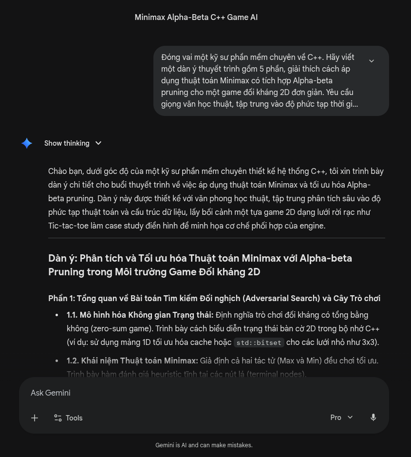
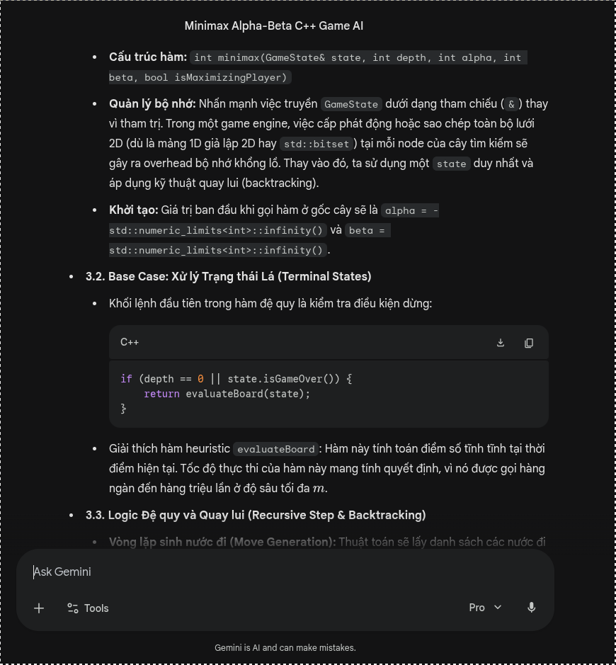
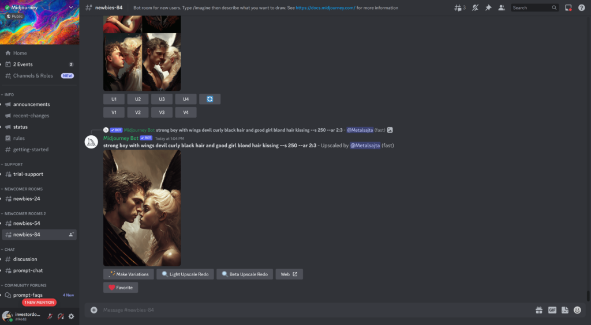
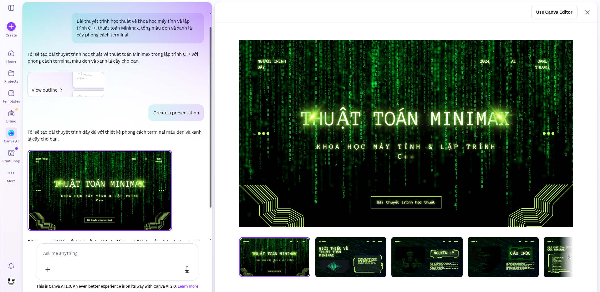

BÁO CÁO BÀI TẬP: ỨNG DỤNG AI TẠO SINH TRONG SÁNG TẠO NỘI DUNG SỐ
Mục tiêu & Tóm tắt
Thành thạo việc sử dụng các công cụ AI tạo sinh để hỗ trợ quá trình sáng tạo nội dung số.
Yêu cầu thực hiện:
Chọn dự án: Lựa chọn một dự án nội dung số cụ thể (ví dụ: bài thuyết trình kết hợp infographic).
Sử dụng công cụ AI: Tích hợp ít nhất 3 loại công cụ: AI tạo văn bản, AI tạo hình ảnh và AI hỗ trợ thiết kế.
Nhật ký thực hành: Ghi lại chi tiết các prompt, kết quả nhận được, cách tinh chỉnh và so sánh giữa các công cụ.
Hoàn thiện: Lắp ghép đầu ra của máy móc và đóng góp sáng tạo, kiểm chứng chuyên môn của con người.
Phân tích chuyên sâu: Đánh giá giới hạn của AI, sự biến đổi trong quy trình làm việc và các khía cạnh đạo đức cốt lõi.
"Dự án này mang lại góc nhìn thực tế về sức mạnh cũng như giới hạn của AI. Việc phối hợp nhiều công cụ AI trong một luồng công việc giúp tối ưu hóa thời gian, nhưng đồng thời cũng đòi hỏi tư duy phản biện khắt khe hơn từ người sử dụng để kiểm soát chất lượng."
1. Tên dự án: Thiết kế Slide thuyết trình chuyên đề "Ứng dụng thuật toán AI vào tối ưu hóa Game Engine 2D bằng C++"
2. Loại hình nội dung: Bài thuyết trình kết hợp Infographic kỹ thuật.
3. Mục tiêu: Trình bày nguyên lý hoạt động của các thuật toán tìm kiếm như Minimax trong việc tạo bot cho game, đồng thời trực quan hóa quy trình này để sinh viên năm nhất hoặc năm hai có thể dễ dàng tiếp thu.
PHẦN II: CHI TIẾT SỬ DỤNG CÔNG CỤ AI TẠO SINH
Để đảm bảo hiệu suất và chất lượng, tôi đã ứng dụng 3 công cụ AI tạo sinh khác nhau phục vụ cho từng khâu cụ thể. Dưới đây là bằng chứng và nhật ký sử dụng.
📌 Lưu ý: Vui lòng xem 5 ảnh chụp màn hình minh họa chi tiết quá trình prompt và kết quả được đính kèm ở trang cuối của báo cáo này.
1. Công cụ AI tạo văn bản - Google Gemini
Tôi sử dụng Gemini để cấu trúc dàn ý logic và nháp các đoạn giải thích thuật toán toán học phức tạp.
Prompt đã sử dụng: Đóng vai một kỹ sư phần mềm chuyên về C++. Hãy viết một dàn ý thuyết trình gồm 5 phần, giải thích cách áp dụng thuật toán Minimax có tích hợp Alpha-beta pruning cho một game đối kháng 2D đơn giản. Yêu cầu giọng văn học thuật, tập trung vào độ phức tạp thời gian Big O.
Kết quả nhận được: Gemini trả về một cấu trúc rất mạch lạc từ định nghĩa Game Tree đến cách tối ưu hóa cắt tỉa nhánh. Tuy nhiên, phần giải thích code khá chung chung và mang tính lý thuyết suông.
Cách chỉnh sửa: Tôi đã giữ lại cấu trúc 5 phần nhưng viết lại toàn bộ phần giải code. Tôi đưa mã nguồn thực tế từ dự án game Tic-Tac-Toe cá nhân của mình vào, giải thích rõ các bước đệ quy để người nghe dễ hình dung hơn.
2. Công cụ AI tạo hình ảnh - Midjourney
Tôi dùng Midjourney để tạo ra các hình ảnh minh họa mang tính ẩn dụ nhằm tăng sự thu hút cho slide mở đầu và các slide chuyển phần.
Prompt đã sử dụng: A retro pixel art illustration of an artificial intelligence brain connected to a computer motherboard, dark theme, neon green and black colors, highly detailed, 16:9 aspect ratio.
Kết quả nhận được: Hệ thống sinh ra 4 lựa chọn hình ảnh có tính thẩm mỹ rất cao, đúng phong cách pixel art cổ điển mà tôi mong muốn.
Cách chỉnh sửa: Tôi chọn bức ảnh có bố cục tốt nhất và tải về. Sau đó, tôi dùng phần mềm chỉnh sửa ảnh để làm mờ nhẹ phần hậu cảnh, tạo khoảng trống tĩnh để chèn văn bản tiêu đề lên trên mà không bị rối mắt.
3. Công cụ AI hỗ trợ thiết kế - Canva AI Magic Design
Tôi sử dụng tính năng Magic Design của Canva để tạo layout tổng thể cho bài thuyết trình một cách nhanh chóng.
Prompt đã sử dụng: Tạo một bản thuyết trình học thuật về khoa học máy tính và lập trình C++, sử dụng tông màu chủ đạo là đen và xanh lá cây phong cách terminal.
Kết quả nhận được: Canva AI tự động dàn trang 10 slide với các bố cục chữ và ảnh xen kẽ khá hiện đại.
Cách chỉnh sửa: Bố cục do AI tạo ra hơi rập khuôn. Tôi phải tinh chỉnh lại kích thước các khối văn bản để chứa vừa các đoạn code C++ mà không bị vỡ dòng. Tôi cũng thay thế các icon có sẵn của Canva bằng các sơ đồ luồng thuật toán do chính tôi vẽ.
PHẦN III: QUÁ TRÌNH SÁNG TẠO VÀ TÍCH HỢP
Trong dự án này, tỷ lệ đóng góp được phân định rõ ràng: AI đảm nhiệm khoảng 35% khối lượng công việc ở khâu lên ý tưởng và tạo tài nguyên thô, trong khi đóng góp cá nhân của tôi chiếm 65% ở khâu chuyên môn, kiểm chứng và hoàn thiện.
Bước 1: Phá vỡ rào cản ý tưởng ban đầu. Thay vì ngồi nhìn màn hình trắng, tôi dùng Gemini để vạch ra lộ trình. Ngay khi có dàn ý, tôi biết mình cần tập trung vào việc giải thích cách hàm đánh giá trạng thái hoạt động thay vì đi lan man vào giao diện đồ họa.
Bước 2: Chuẩn bị môi trường và mã nguồn. Vì slide yêu cầu tính thực tế cao, tôi không dùng code do AI sinh ra. Tôi sử dụng môi trường quen thuộc của mình là Arch Linux để chạy lại các đoạn mã C++, chụp lại màn hình console lúc bot đang tính toán thời gian thực thi để làm minh chứng sống động cho bài thuyết trình.
Bước 3: Tích hợp hình ảnh và thiết kế. Tôi lấy nền tảng template từ Canva AI, chèn các bức ảnh pixel art từ Midjourney vào slide tiêu đề. Tại các slide kỹ thuật số liệu, tôi tự thiết kế các bảng so sánh thời gian chạy thuật toán. Sự kết hợp này mang lại một sản phẩm vừa có tính nghệ thuật cao nhờ AI, vừa đảm bảo sự chính xác tuyệt đối về mặt kỹ thuật lập trình do chính con người kiểm soát.
PHẦN IV: SO SÁNH VÀ PHÂN TÍCH CÔNG CỤ AI
Qua quá trình làm việc, tôi nhận thấy mỗi công cụ đều có điểm mạnh và giới hạn riêng biệt, tác động trực tiếp đến luồng công việc.
Về mảng tư duy logic: Google Gemini thể hiện sự vượt trội trong việc hiểu các khái niệm kỹ thuật sâu. Khi tôi yêu cầu phân tích về Big O, mô hình đưa ra lập luận toán học rất chính xác. Tuy nhiên, điểm hạn chế là văn phong tiếng Việt đôi khi bị máy móc. Để khắc phục, tôi đóng vai trò là một biên tập viên, biên dịch lại ngôn ngữ máy sang ngôn ngữ tự nhiên, gần gũi với tư duy của sinh viên kỹ thuật.
Về mảng thị giác: Midjourney không có đối thủ trong việc tạo ra concept art ấn tượng chỉ trong vài giây. Dù vậy, điểm yếu chí mạng của Midjourney là không thể sinh ra các sơ đồ khoa học hoặc văn bản chính xác. Nếu yêu cầu AI vẽ một "Cây trò chơi" chứa các con số thuật toán, kết quả trả về sẽ là những ký tự vô nghĩa.
Về mảng dàn trang: Canva AI Magic Design là một trợ lý đắc lực để tiết kiệm thời gian định dạng chữ và phối màu. Tuy nhiên, nó thiếu khả năng hiểu ngữ cảnh sâu sắc của nội dung. Nó thường đặt các hình ảnh minh họa không liên quan vào các slide chứa code kỹ thuật, buộc người dùng phải can thiệp thủ công rất nhiều.
PHẦN V: PHÂN TÍCH VAI TRÒ CỦA AI VÀ VẤN ĐỀ ĐẠO ĐỨC
1. Cách AI thay đổi quy trình sáng tạo
Trí tuệ nhân tạo đã định hình lại hoàn toàn cách tôi tiếp cận một dự án nội dung. Trước đây, quy trình tuyến tính đòi hỏi tôi phải tốn hàng giờ để tìm kiếm ảnh minh họa trên các kho ảnh miễn phí hay tự tay căn chỉnh từng slide. Hiện tại, AI đóng vai trò như một người trợ lý nghiên cứu cấp dưới. Nó làm những công việc tốn sức, lặp lặp lại để tôi có thể dồn 100% năng lượng tinh thần vào việc đảm bảo tính chính xác của thuật toán C++ và chất lượng thông điệp truyền tải.
2. Vấn đề đạo đức cần cân nhắc
Việc sử dụng AI trong môi trường học thuật đặt ra những câu hỏi nghiêm túc về tính nguyên bản và quyền tác giả. Thứ nhất, đối với hình ảnh tạo từ Midjourney, bản chất thuật toán là học từ hàng triệu bức tranh có bản quyền của các nghệ sĩ trên internet. Việc sử dụng chúng cho dự án thương mại sẽ là một vùng xám pháp lý lớn. Dù đây là bài tập môn học, tôi vẫn phải ghi chú rõ nguồn gốc hình ảnh là do AI tạo ra để đảm bảo tính minh bạch.
Thứ hai, trong việc lập trình và viết báo cáo, nếu lạm dụng Gemini để sinh mã nguồn hoặc viết bài mà không kiểm chứng, đó là hành vi đạo văn. Sự khác biệt giữa "sử dụng AI như một công cụ hỗ trợ" và "nhờ AI làm hộ" nằm ở khâu biên tập và tư duy phản biện. Con người phải luôn là người chịu trách nhiệm cuối cùng cho tính đúng đắn của mọi dòng lệnh và câu chữ được xuất bản.
PHỤ LỤC: ẢNH CHỤP MÀN HÌNH MINH HỌA
Hình ảnh 1: Giao diện Google Gemini với prompt yêu cầu tạo dàn ý thuyết trình.

Hình ảnh 2: Giao diện Google Gemini với kết quả trả về và quá trình tinh chỉnh lại nội dung code.

Hình ảnh 3: Giao diện Discord sử dụng Midjourney bot sinh ảnh.

Hình ảnh 4: Giao diện Canva AI Magic Design đang tự động tạo layout slide.

Hình ảnh 5: Không gian làm việc cá nhân thể hiện sự tích hợp kết quả từ AI vào bài thuyết trình hoàn chỉnh.